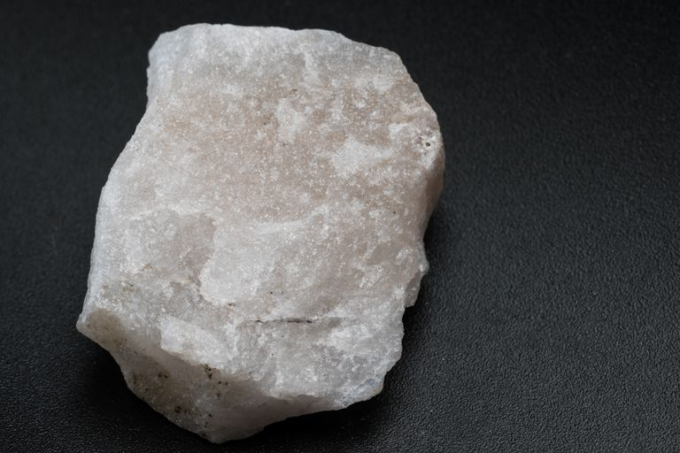
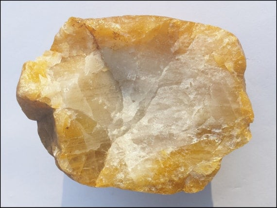
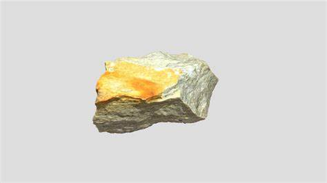
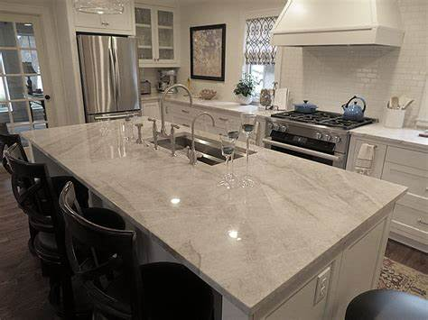
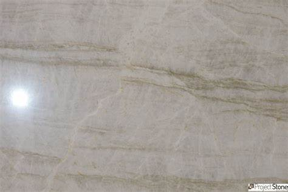
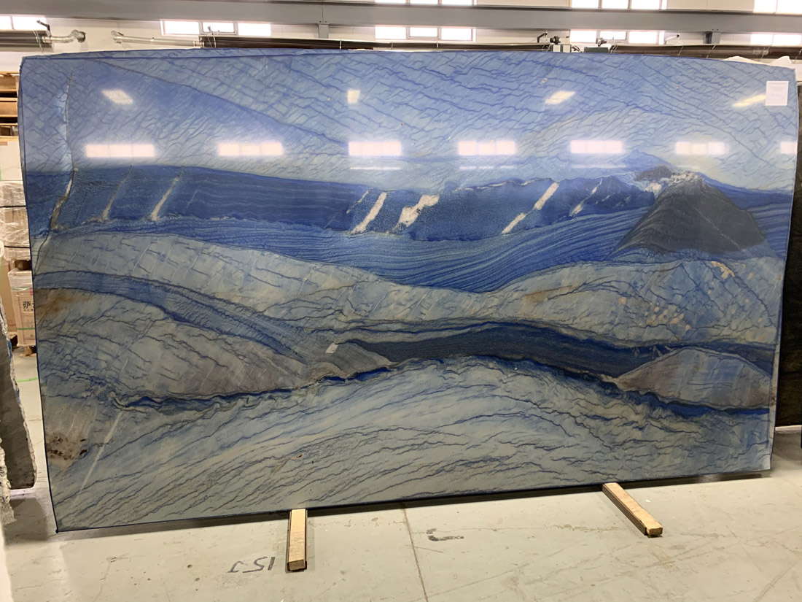
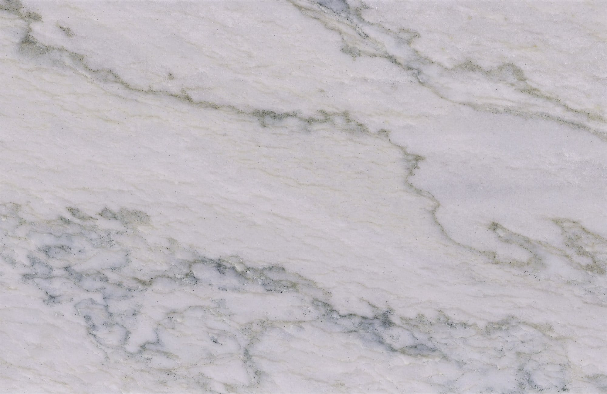
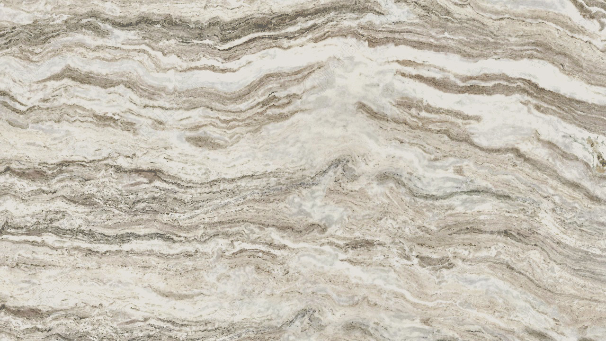

Quartzite: The Durable Metamorphic Rock

Chemical Formula: SiO₂ (Silicon Dioxide)
Color: White, Gray, Pink, Red, Yellow, Green, Blue, and other shades depending on impurities
Hardness: 7 on the Mohs scale
Crystal System: Hexagonal
Localities: United States, Brazil, South Africa, Norway, India, Canada
Common Uses: Construction, Countertops, Flooring, Decorative Stone, Road Aggregate
Introduction to Quartzite
Quartzite is a metamorphic rock primarily composed of quartz (silicon dioxide). It forms from the metamorphism of sandstone under intense heat and pressure, which recrystallizes the quartz grains and creates a rock that is incredibly hard and durable. With a hardness of 7 on the Mohs scale, quartzite is more resistant to abrasion than most other natural stones, including granite.
Often mistaken for marble or granite, quartzite is a distinctive rock that combines the beauty of marble with the toughness of granite, making it a popular material for both construction and interior design. Quartzite can come in a variety of colors ranging from white and gray to more vibrant hues like pink, red, and green, depending on the mineral impurities present.
Formation and Types of Quartzite
Quartzite forms from the metamorphism of quartz-rich sandstone. The heat and pressure during metamorphism cause the quartz grains to recrystallize, resulting in a dense interlocking crystal structure that gives quartzite its exceptional hardness and durability. Unlike marble, which forms from limestone, quartzite maintains much of its original quartz content, making it less prone to etching and staining from acidic substances.
Key Types of Quartzite:
1. Pure Quartzite
Pure quartzite is typically white or gray, as it is composed almost entirely of quartz. This variety is highly valued for its uniform color and fine texture, often used in high-end construction projects.
2. Colored Quartzite
Impurities such as iron oxide, silica, and trace minerals can result in quartzite with a range of colors. Some of the common shades include:
- Pink and Red Quartzite: These colors result from iron oxide impurities.
- Green Quartzite: Chlorite or other minerals give quartzite a greenish hue.
- Yellow Quartzite: Limonite or other iron-rich minerals can produce yellow tones.
- Blue Quartzite: Rare and prized, this type gets its color from minerals like dumortierite.
3. Foliated Quartzite
In some cases, quartzite exhibits slight foliation, which means it may have layers or planes of weakness. This is caused by the alignment of minerals during the metamorphic process, though true quartzite is generally non-foliated and breaks along irregular fractures rather than cleaving along planar surfaces.
Structure and Properties of Quartzite
Quartzite has several defining physical properties that set it apart from other stones:
- Hardness: Quartzite’s hardness ranks at 7 on the Mohs scale, making it more resistant to scratches and abrasions than granite, marble, and most other natural stones.
- Porosity: Although quartzite is highly durable, it can still be porous depending on the degree of metamorphism. More compact varieties are less porous and less prone to staining.
- Durability: Due to its high quartz content, quartzite is extremely resistant to chemical weathering, making it ideal for both indoor and outdoor use in harsh conditions.
- Crystal Structure: Quartzite consists of tightly interlocking quartz grains, giving the rock its granular texture. When viewed under a microscope, the grains often appear fused, creating a mosaic of quartz crystals.
- Resistance to Heat and Acid: Unlike marble, which can etch when exposed to acidic substances, quartzite is much more resistant to acids, although it’s still advisable to seal the stone for added protection.
Uses of Quartzite
Quartzite’s combination of beauty and strength makes it a versatile material used in various applications:
1. Construction
Quartzite is commonly used as a construction stone due to its strength and durability. It is used for building facades, walls, and flooring, particularly in areas where resistance to weathering is essential. Many historic buildings have used quartzite due to its longevity and aesthetic appeal.
2. Countertops
Quartzite has become a popular choice for kitchen and bathroom countertops due to its marble-like appearance and superior hardness. It resists scratches, stains, and heat, though it must be sealed to prevent liquids from penetrating its surface.
3. Flooring and Wall Cladding
Quartzite’s durability and resistance to wear make it an excellent material for flooring and wall cladding. It is especially popular in high-traffic areas such as hallways, kitchens, and commercial spaces. Its natural beauty combined with its strength provides a luxurious yet practical finish.
4. Decorative Stone
Polished quartzite is often used as a decorative stone in landscaping, garden paths, and water features. Its natural textures and variety of colors make it a popular choice for outdoor applications, including patios, steps, and driveways.
5. Road Aggregate
Crushed quartzite is used as an aggregate in the construction of roads, railways, and as a base material in many types of infrastructure projects. Its hardness and resistance to wear make it an ideal material for road surfaces.
History of Quartzite
Quartzite’s use in human history stretches back thousands of years. Early civilizations recognized its strength and durability, utilizing it for tools and construction materials.
Ancient Civilizations
Quartzite was used by prehistoric humans for tool-making due to its hardness and sharp edges when fractured. Archaeological sites often contain quartzite artifacts such as arrowheads and scrapers. In later periods, the stone was employed in monumental architecture.
Industrial Revolution
During the Industrial Revolution, quartzite became more widely used in construction and as a raw material for road building. Its exceptional strength and resistance to weathering made it ideal for these purposes.
Modern Applications
In the modern era, quartzite has seen a resurgence in popularity, particularly in interior design and high-end architecture. Its aesthetic appeal combined with its functionality has made it a top choice for countertops, flooring, and wall cladding.
Famous Varieties of Quartzite
Several varieties of quartzite are renowned for their beauty and unique properties:
1. Taj Mahal Quartzite
This cream-colored quartzite, known for its soft, elegant appearance, is frequently used for countertops and flooring. It resembles marble but is much more durable.
2. Azul Macaubas Quartzite
One of the rarest types of quartzite, Azul Macaubas is prized for its striking blue color. It is often used in luxury projects and is highly sought after for its unique appearance.
3. White Macaubas Quartzite
White Macaubas has subtle veining that resembles marble but with the hardness and durability of quartzite. It is commonly used in kitchens and bathrooms for countertops and backsplashes.
4. Fantasy Brown Quartzite
Although often mistaken for marble, Fantasy Brown is actually a type of quartzite with flowing veins of brown, cream, and gray. It combines durability with a luxurious appearance, making it a popular choice for countertops and floors.
Quarrying and Sourcing of Quartzite
Quartzite is quarried from locations around the world, with each region producing stones with distinct colors and patterns. The extraction of quartzite typically involves cutting large blocks from the quarry, which are then processed into slabs or tiles.
Notable Quarry Locations:
- United States: Particularly in the Appalachian Mountains and western states like Colorado, quartzite is quarried for use in both construction and interior design.
- Brazil: Brazil is a major producer of quartzite, known for varieties like Azul Macaubas and Taj Mahal.
- South Africa: The rich, colorful quartzite varieties from South Africa are often used in luxury applications.
- Norway: Norway’s quartzite is used both for construction and decorative purposes, with some varieties displaying vibrant colors.
Extraction Process
Modern quarrying techniques involve cutting quartzite blocks using diamond wire saws, which minimize waste and allow for precision. These blocks are then transported to processing facilities, where they are cut into slabs and polished for use in construction and design.
Enhancement of Quartzite
While quartzite is naturally durable and attractive, certain treatments can enhance its appearance and longevity for commercial and residential use:
- Polishing: Quartzite is often polished to bring out its natural beauty, giving the surface a high-gloss finish. Polishing also helps to seal the stone's pores, making it more resistant to staining.
- Sealing: Because quartzite, like many natural stones, can be porous, sealing the surface is essential, especially for countertops and flooring. A sealant helps prevent moisture, oils, and acids from penetrating the surface and causing damage or stains.
- Honing: Some homeowners prefer a matte finish, which can be achieved through honing. Honed quartzite offers a smooth, flat finish that doesn't reflect as much light as polished quartzite, providing a more subtle and understated look.
- Resin Treatment: Resin can be applied to the surface of quartzite to fill in minor cracks or imperfections, enhancing its visual appeal and increasing its durability.
Caring for Quartzite
Proper care and maintenance can help extend the life and beauty of quartzite surfaces:
- Cleaning: Clean quartzite with a mild pH-neutral cleaner and a soft cloth. Avoid using acidic cleaners as they can dull the finish over time.
- Sealing: To protect quartzite from staining, it should be sealed periodically, especially in areas exposed to moisture or heavy use, such as kitchens and bathrooms.
- Polishing: Polished quartzite may need occasional re-polishing to restore its shine, especially if it experiences heavy use.
- Avoiding Scratches: Although quartzite is hard, using cutting boards and trivets can prevent unnecessary scratches or heat damage on countertops.
Environmental Considerations
Like other natural stones, quartzite quarrying can have environmental impacts. The extraction of quartzite requires significant energy and can lead to landscape disruption. However, advancements in sustainable quarrying practices, including reduced energy consumption and responsible land reclamation, are being implemented to mitigate the environmental footprint of quartzite production.
Some companies are also focusing on minimizing waste during the cutting and processing stages, reusing leftover material for aggregate or smaller applications such as tiles and mosaics. Additionally, since quartzite is incredibly durable and long-lasting, its use in construction and design can be seen as a sustainable choice compared to materials with shorter lifespans.
Famous Quartzite Structures and Applications
Due to its strength, quartzite has been used in both ancient and modern architectural marvels:
- Capitol Building, Washington D.C.: Quartzite was used in the construction of some structural components of the United States Capitol.
- Pathways and Monuments: Quartzite has been used in numerous public and private buildings for flooring, cladding, and pathways due to its durability and resistance to weathering.
Today, quartzite is increasingly used in luxury homes, office buildings, and commercial projects, particularly for high-end kitchens, bathrooms, and outdoor spaces where both aesthetics and durability are paramount.
See Also
- Sandstone: The precursor rock to quartzite, known for its use in building materials and landscapes.